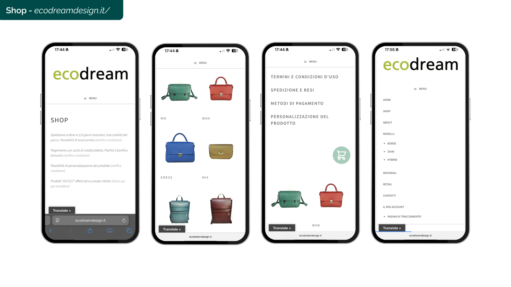
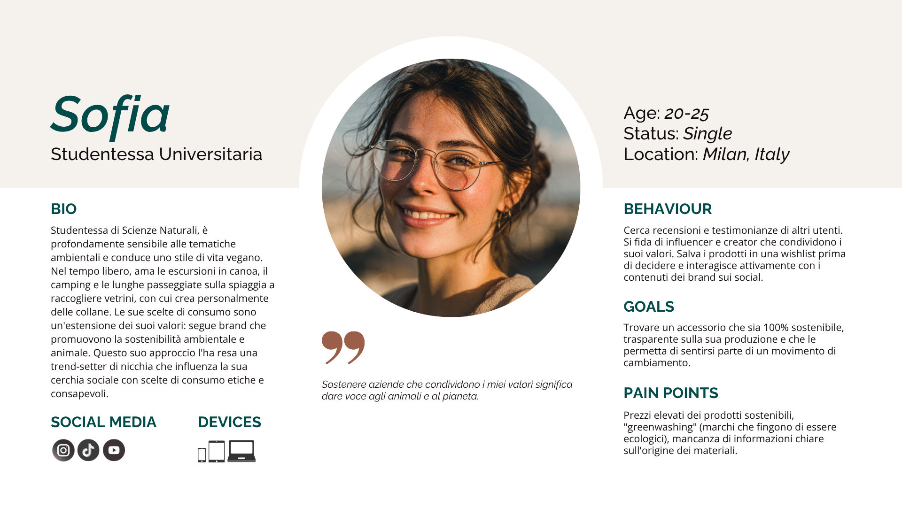
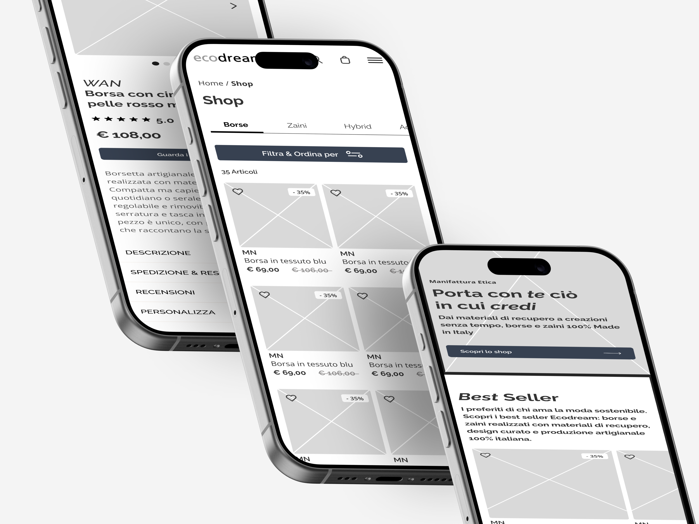
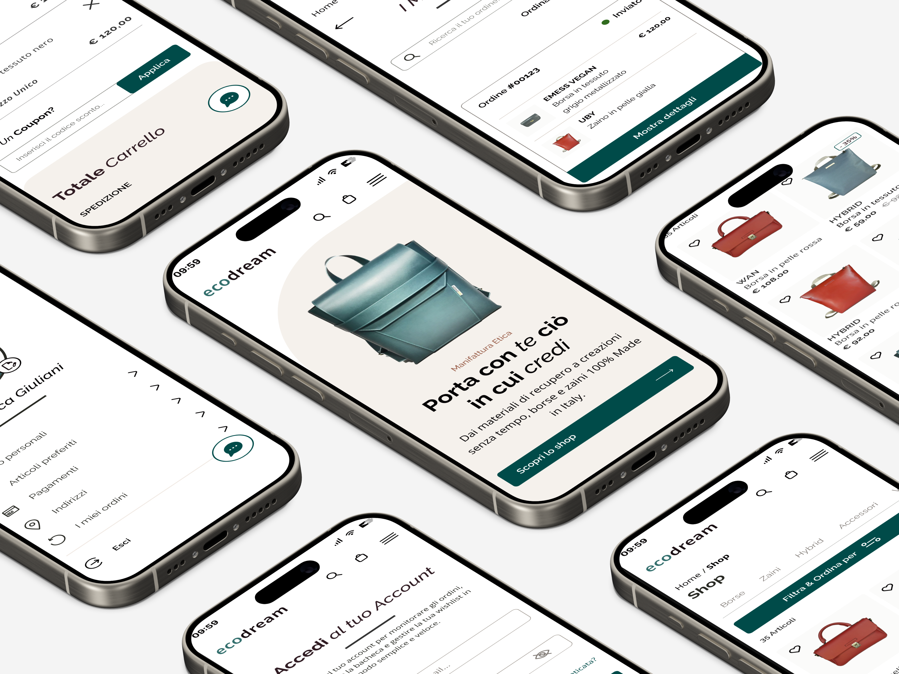
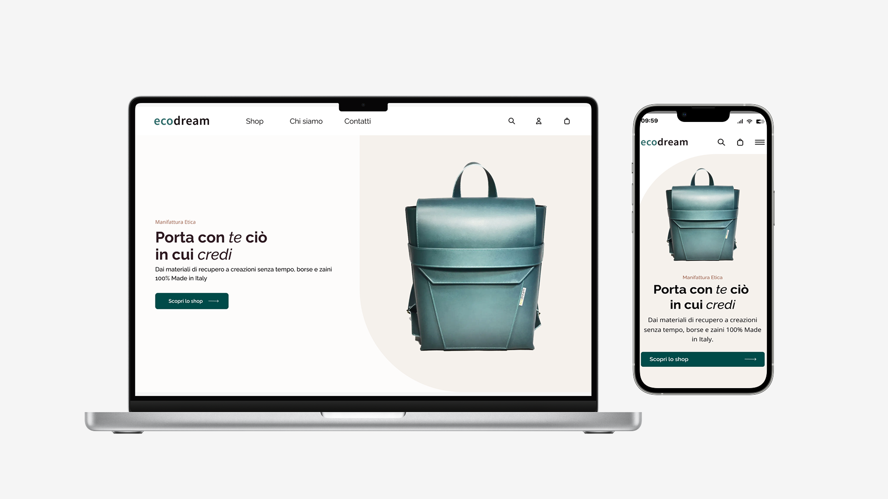

Redesigning a sustainable experience
A complete UX/UI redesign of Ecodream, an Italian sustainable fashion brand that transforms discarded materials into handcrafted bags and backpacks. The project focused on improving usability, accessibility, product discovery, and conversion — while preserving the brand's values of sustainability, craftsmanship, and slow fashion.
UX/UI Designer — research, wireframing, UI design, usability testing.
6 weeks, from discovery to validated high-fidelity prototype.
Responsive redesign — desktop and mobile of the existing e-commerce website.
UX research, sitemap, wireframes, UI kit, hi-fi prototype, usability test report.
- 01Research
- 02Define
- 03Architecture
- 04Wireframes
- 05UI Design
- 06Testing
Where the experience was breaking down
Ecodream creates handcrafted bags and backpacks using reclaimed leather, fabrics and recycled materials. The brand's values are strong — but the website wasn't communicating them. An extensive discovery phase (heuristic evaluation + accessibility audit) revealed several issues affecting navigation and the shopping experience.

- 1Difficult product discovery — no filters, weak categorization, hard to browse and compare products.
- 2Weak visual hierarchy — key actions and content competed for attention, increasing cognitive load.
- 3Limited accessibility — contrast, focus states and semantics below WCAG expectations.
- 4Low trust signals — no reviews, unclear FAQs, poor support and no retention features like a wishlist.
- 5Inconsistent UI patterns — components behaved differently across pages, breaking user expectations.
Building a user-centered foundation
The research phase combined heuristic evaluation, an accessibility audit, competitive analysis, and user-focused methods like surveys, personas and journey mapping — to understand expectations, identify friction points and uncover opportunities.

Product discovery
Users struggled to browse and compare products efficiently due to the lack of filtering and clear categorization.
Clarity & conversion
Important actions and customization options lacked visibility, increasing cognitive load during checkout.
Trust & retention
The website lacked reviews, clear FAQs, support features, and retention mechanisms like a wishlist.
Designing better user flows
The main user journeys were redesigned across desktop and mobile, simplifying navigation and reducing friction along the purchase journey. Key screens: homepage, product listing, product detail, login & registration, my account, cart & checkout.

A visual system inspired by craftsmanship
The interface was rebuilt on a visual language aligned with Ecodream's values: warmth, authenticity, timeless quality & sustainability.
Color palette
Typography
Aa — Raleway
Open Sans — regular, for long-form reading and product descriptions across all breakpoints.
The redesigned experience
High-fidelity screens across desktop and mobile: an earth-inspired palette, a responsive grid system, clear hierarchy and consistent components.

Validating the experience
A moderated remote usability test was conducted with participants matching Ecodream's target audience, focusing on navigation intuitiveness, information architecture, first-click accuracy and visual clarity. The results confirmed strong overall usability and surfaced minor refinement opportunities.
The redesign transformed Ecodream's digital experience into a more intuitive, accessible and conversion-oriented platform — while staying true to the brand's sustainable mission.
